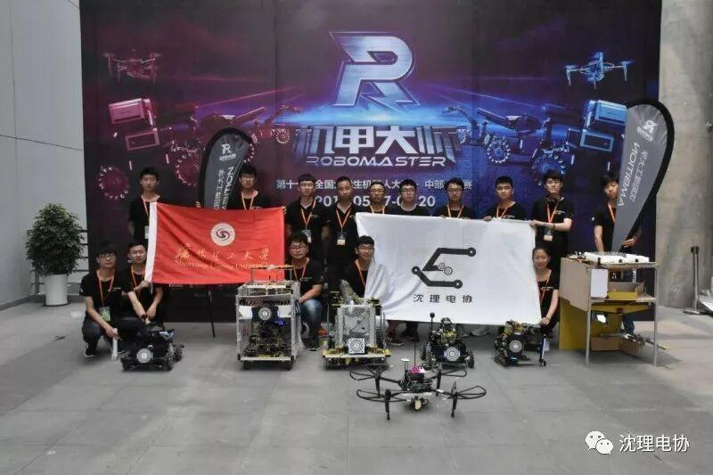
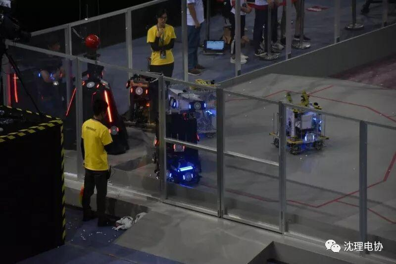
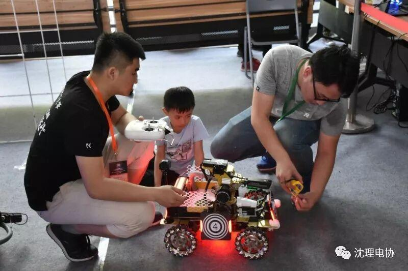
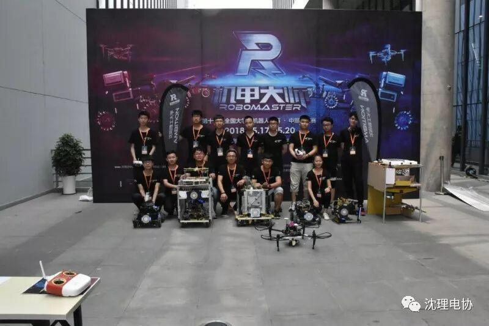

RM分区赛结束｜Ambition王者归来
雄赳赳，气昂昂，谁输谁赢谁管它
毋虚他，不怂他，明年RM来再战
沈阳的五月灼日高挂，天空擦掉白云呈现蓝底，竞技的光芒闪烁其中，越发耀眼，南京也该是受了影响，赛程的几天才会过得格外快。

RM中部分区赛已经结束，Ambition与江科队伍势均力敌，互不相让，与其第一场比赛中，双方队员全神贯注，气氛紧张，不料敌方取得先机，不过我方步步紧逼进而反超，却因战略失误，以800多血量惜败江科。

第二场江科机器人中途出现故障，我们取得了胜利。但由于先前与安信工的比赛中，我们开始战略没调整好；第二场虽拿到一血，共“杀死”对面两个机器人，但对方死守基地，我方惜败，Ambition终是抱憾离场。

犹记那年广告言：哪怕遍体鳞伤，也要活得漂亮！作为一个新生组织，Ambition还有太多太多的未知，趁现在，有精力，那就放手去搏，大胆去做，我们会为你们撑直腰杆，除草去虫，成为你们最坚强的后盾！

所以，who fear ？365天后，依旧是个好汉，届时Ambition定会让你们惊叹他们的进步，而你们却未必能防住他们的攻势！我们根本不服输，明年再来一战啊！
奋力拼搏的人，从来不缺方向！！！
文| 罗杰
编辑| 刘聪